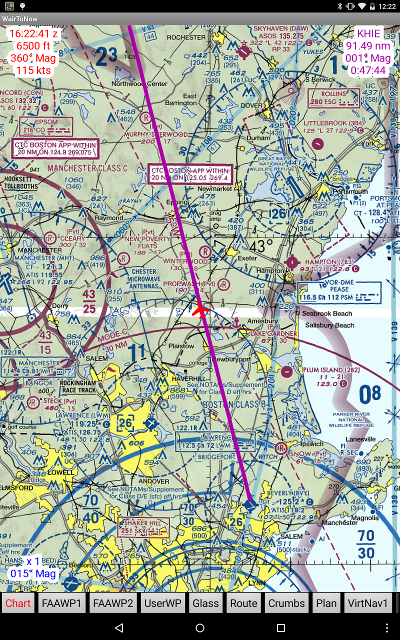
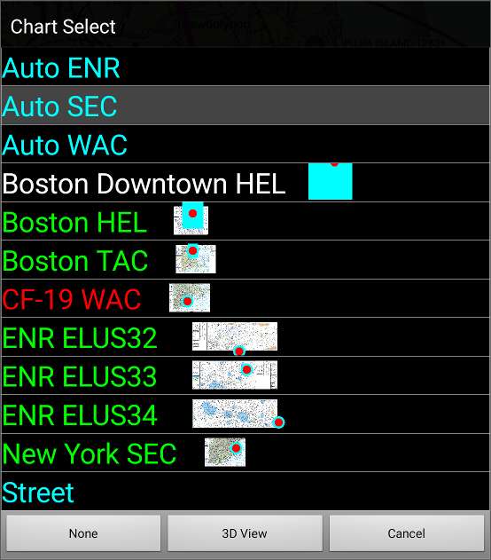
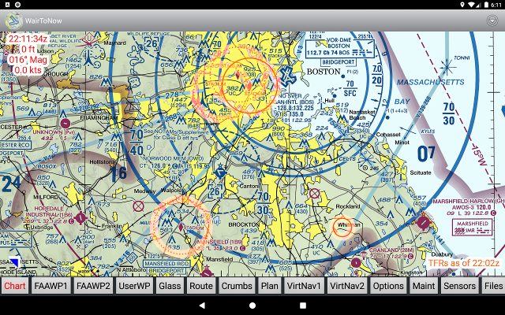
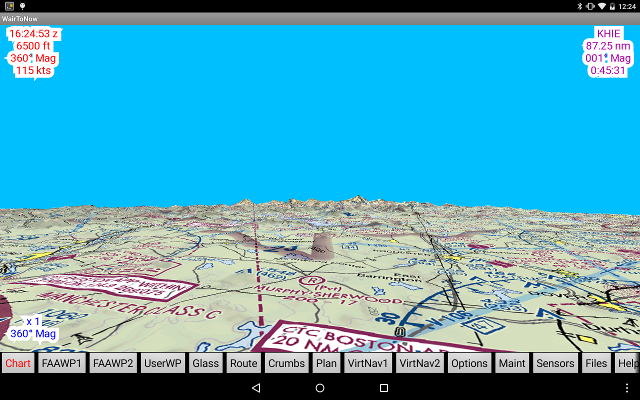

Chart Page
This is the main moving map page.

- Upper left corner cloud shows the latest information received by the GPS,
including time, altitude, heading and speed. The cloud will shrink to a red
triangle button when clicked and can be restored by clicking the red triangle.
The latest GPS position is indicated by the red airplane icon
on the map, provided the display contains the lat/lon of the latest GPS
position.
NOTE: This information is suppressed when
Option Type B
is checked so as to, in the words of
AC 120-76C
, block the GPS from providing
false or misleading information.
- Lower left corner cloud shows the lat/lon position of the center of the
display, zoom factor and map rotation (see below). There will also be a
blue cross in the center if the airplane is not centered in the display.
The cloud and line will shrink to a blue triangle button when clicked and
can be restored by clicking the blue triangle.
- If a course is selected (via Waypt1/2,
UserWP GoTo buttons), the course information
will be shown in the upper right corner cloud in purple along with a purple course
line. The cloud may be hidden by clicking on the cloud, shrinking it to
a purple triangle. Another click will hide the course line. A third click
will restore the cloud and course line. The course
can be cleared by long-clicking on the cloud or purple triangle button.
- Select a chart by clicking the Chart button in
the menu bar at the bottom of the screen.
- Auto ENR - selects IFR enroute charts to cover the screen (provided
they have already been downloaded). Any legend information is trimmed
from the borders and they are stitched together if necessary. Note that
the scaling of enroute charts varies and so there may be discontinuity
of text and line sizes where the charts join.
- Auto SEC - selects sectional(s) to cover the screen (provided
they have already been downloaded). Any legend information is trimmed
from the borders and they are stitched together if necessary.
- Street - use OpenStreetMap tiles at appropriate zoom level for
display. Requires Internet connection if tiles have not already
been displayed on this device.
- Chart name in WHITE - chart has not been downloaded. Selecting the
chart will initiate download. Requires Internet connection.
- Chart name in RED - chart has been download but is expired. Use
maint page to update.
- Chart name in YELLOW - chart has been downloaded, is valid now, but is
about to expire. See maint page for expiration
date and to download updated chart.
- Chart name in GREEN - chart has been downloaded and is valid now and
for the next few days.
NOTE: If only a selection for Street appears, it is usually because
the device has not received a GPS position report, the GPS position is not in an
area covered by the app, or that the database has not been
downloaded.
NOTE: The primary aviation charts also have a graphic next to the name
with a white filled rectangle representing the chart, and the current canvas
position represented by a cyan filled rectangle (or dot if the rectangle is too
small), and the current position represented by a red dot (if it is within range
of the chart). If the chart is downloaded, a thumbnail will be used in place of
the white filled rectangle.
NOTE: The Auto buttons will prompt to download charts that they
need to fill the screen if they are not already downloaded. The download works
only if there is current Internet connectivity. If you cancel the prompt but
later wish to download the charts, either use the
maint page, or reselect the Auto button from
the chart menu or select the specific chart you want from the chart menu.

NOTE: If you manually pan the display, the chart will fix in place and
will not track movement of the airplane. The airplane will move but the chart
will not. To re-engage tracking, click the Android menu button then
click Re-center. The chart will move to maintain the airplane in the
center of the display, the blue cross will be taken away and the information
in the lower left corner cloud will be reduced to a minimum.
NOTE: The app dynamically constructs tiles for zoomed-out levels the first time
the tiles are needed (to conserve flash space). Once constructed, they are retrieved
from flash in the future for faster display. The delay can particularly be noticed on
extreme zoom-out levels such as x 0.2. However the charts aren't particularly
readable at those zoom-outs so they are of little practical use anyway.
The details of what appears in the lower left corner cloud may vary based
on the current situation. At most, lines such as these will appear:
6.79 nm
011° Mag
42°41.4634'N
70°53.3888'W
x 1
015° Mag
- 6.79 nm - distance from airplane icon to center
of screen. Not shown if aircraft is centered on screen because it would be zero.
- 011° Mag - heading from airplane icon to center
of screen. Not shown if aircraft is centered on screen because it would be undefined.
- 42°41.4634'N - latitude of center of screen.
Not shown if aircraft is centered on screen and upper left corner opened because it
would be same as current GPS latitude as shown in upper left corner.
- 70°53.3888'W - longitude of center of screen.
Not shown if aircraft is centered on screen and upper left corner opened because it
would be same as current GPS longitude as shown in upper left corner.
- x 1 - chart magnification factor. x1 indicates
standard 500,000:1 sectional magnification.
- 015° Mag - chart chart rotation factor, ie,
what chart heading is 'UP'.
TFRs will be shown on the chart if enabled with the TFR selection on the
options page:

- The dotted lines indicate stadiums without an event scheduled.
However, be wary of this status unless you are certain
there is no event at the stadium. It is best to steer clear if there
is any doubt.
- The solid rings around stadiums indicate that there is an event there or will
soon be. Click the ring to display details.
- The solid rings elsewhere indicate other TFRs (such as security or hazard),
as indicated on the FAA's TFR webpage.
Click the ring to display details. Information on more than one TFR may
appear as there may be different time ranges at overlapping areas.
- The text in the lower right corner indicates when the TFR information being
displayed was fetched from the Internet. It tries to update approximately
every ten minutes assuming Internet access is available.
- As with all information presented by WairToNow, verify the
information with official FAA sources. We recommend a telephone
flight briefing being obtained. Even the FAA's
TFR webpage disclaims accuracy of information presented on their own
website!
The information for the TFRs is derived from these online sources:
The chart selection menu contains a 3D View button which switches to a 3D format
display:

The display can be panned and zoomed using one or two fingers. It can be switched back
to the 2D format by clicking the 2D View button on the chart selection menu.